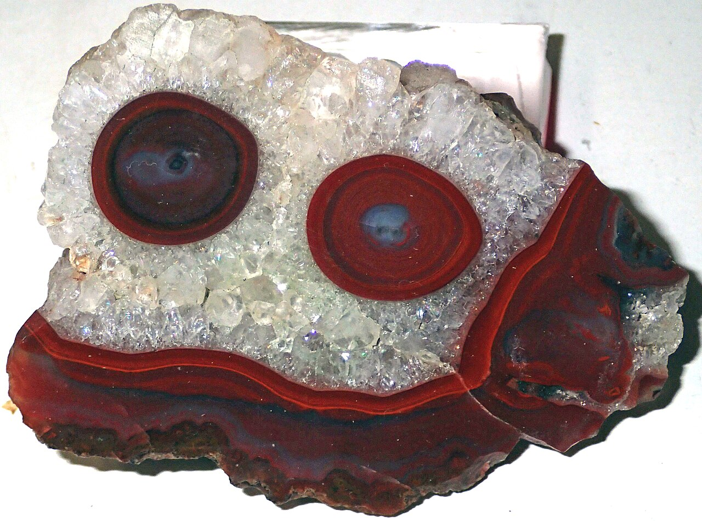
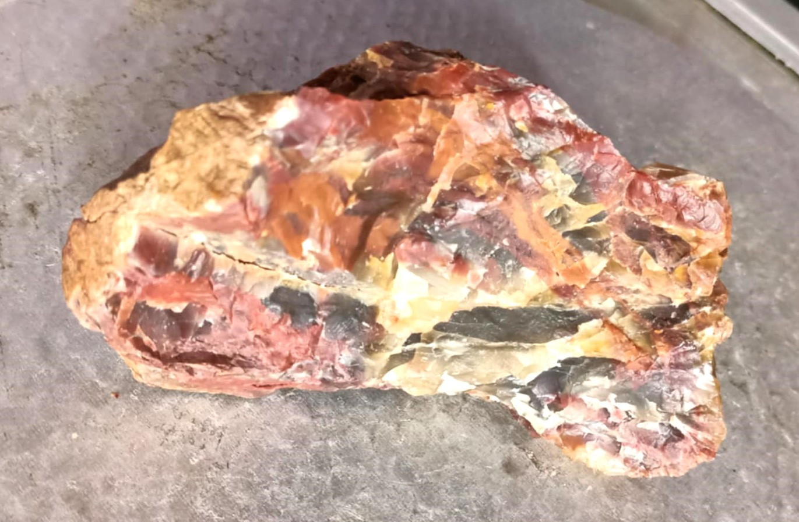
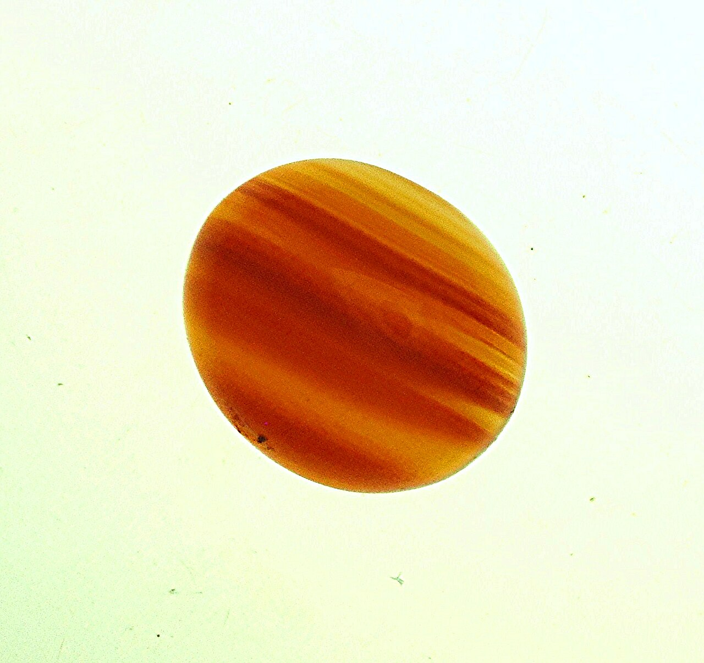
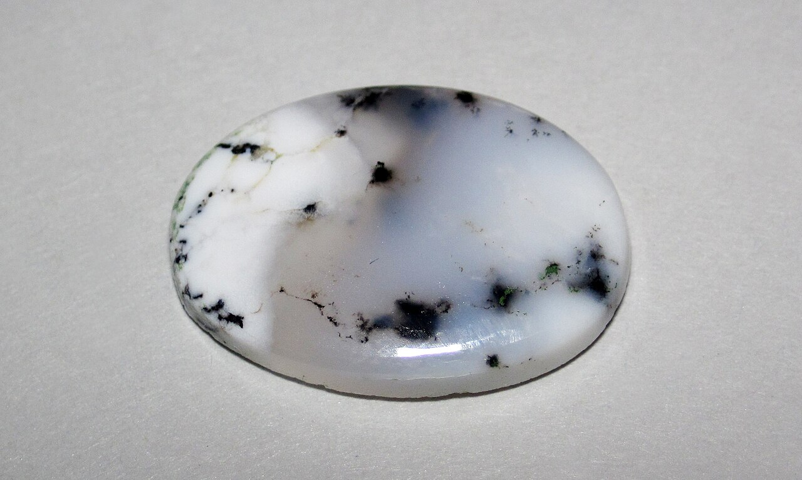

Agat
Agat przybiera wiele barw i wzorów: może być czarny z białymi pasami lub kręgami, mieć żółte żyłki albo plamy przypominające krew, być koralowoczerwony lub przedstawiać wzory lasów i zwierząt. ¹ ² ³ ⁵ ⁶ Agat leczy ukąszenia jadowitych stworzeń, chroni wzrok, wzmacnia noszącego i odpędza burze; ⁴ ⁶ właściwości te zależą jednak od odmiany i sposobu użycia opisanych niżej.
Opis ogólny
Opis
Agat przybiera rozmaite barwy i wzory, zależnie od odmiany oraz miejsca powstania. Najczęściej spotyka się agat sycylijski: jest czarny, przecięty białymi żyłkami lub pierścieniami. ¹ ³ ⁶ Inne odmiany przypominają koral, są czarne z żółtymi żyłkami, nakrapiane plamami podobnymi do krwi albo zdobione wizerunkami lasów, zwierząt, kwiatów, ptaków i ludzi. ¹ ⁵ Niebieskawy kamień z białą zewnętrzną warstwą, porównywaną do kopyta lub kości słoniowej, a także do hiacyntu, występuje wśród Scytów; ² nie ma pewności, czy należy go uznać za agat.
Właściwości
Agaty wzmacniają noszącego, nadają cerze zdrowy wygląd, a człowiekowi wymowę, wdzięk i przychylność otoczenia; pomagają mu też przezwyciężać niebezpieczeństwa. Sprawiają też, że noszący staje się przezorny. ⁵ ⁶ Jeden rodzaj, rozsypany na ołtarzu, wydziela opary podobne do mirry. ⁵ Czarno-biały agat, położony pod głową śpiącego, sprowadza liczne sny. ¹
Na jad pająka lub innego jadowitego stworzenia należy ogrzać kamień na słońcu albo na rozgrzanej płytce i przyłożyć go do bolącego miejsca. Następnie trzeba ponownie go ogrzać, przytrzymać nad parującą wodą i na krótko zanurzyć w tej wodzie. Płótno lniane zwilżone wodą i przyłożone do ukąszenia wyciąga truciznę oraz leczy ranę. ⁴ Agaty o barwie lwiej skóry, kreteńskie odmiany czerwono-złote oraz odmiany indyjskie mają dodatkowe moce przeciwtrujące opisane w podrozdziałach. ² ³ ⁶
Agat ogrzewany przy nagiej skórze sprawia, że noszący go staje się zręczny, rozsądny i roztropny w mowie. ⁴ Osoba cierpiąca na epilepsję lub obłęd może nosić kamień przy ciele, a wody, w której leżał, używać do przygotowywania jedzenia i napojów. W leczeniu epilepsji należy pozostawić agat w wodzie przez trzy dni podczas pełni Księżyca; ⁴ czwartego dnia trzeba go wyjąć i lekko ogrzać wodę, nie doprowadzając jej do wrzenia. Wodę tę należy wykorzystywać do wszystkich potraw i napojów w czasie ubywania Księżyca. Kuracja trwa dziesięć miesięcy. Przy obłędzie, gdy zbliża się napad choroby, przygotowanie należy rozpocząć trzy dni wcześniej i stosować wodę do jedzenia i picia przez cały czas choroby; pięć miesięcy takiej kuracji przywraca rozum i zdrowie.
Aby powstrzymać złodziei, należy każdej nocy obnosić dobrze widoczny agat po całym domu, wzdłuż i wszerz, kreśląc nim znak krzyża. ⁴ Spalany agat wydziela dym, który odpędza burze i zatrzymuje bieg rzek. ³
Grawerowanie
Wyrzeźbione na agacie wizerunki nadają mu dodatkowe właściwości. ⁶
- Wizerunek mężczyzny trzymającego żmiję odpędza jej jad. Należy wyrzeźbić go na agacie sycylijskim i przyłożyć kamień do ukąszenia albo zmielić go i wypić z winem. ⁶
- Konstelacja Serpentarium wyryta na agacie sycylijskim podwaja działanie kamienia przeciw truciznom. ⁶
- Wizerunek koguta lub trzech młodych kobiet przynosi przychylność ludzi i władzę nad duchami powietrza; służy też sztukom magicznym. ⁶
- Pełna postać skrzydlatego konia zapewnia zwycięstwo i roztropność we wszystkich działaniach. ⁶
Odmiany
| Odmiana | Wygląd i miejsce występowania | Właściwości |
|---|---|---|
| Podtyp I: Agat czarno-biały | Odmiana sycylijska: czarna, z białymi żyłkami lub kręgami. ¹ ² ⁶ | Położona pod głową śpiącego sprowadza sny. ¹ Odmiana sycylijska chroni też przed jadem żmij i skorpionów. ⁶ |
| Podtyp II: Agat kreteński czarno-żółty | Czarny, z żółtymi żyłkami; pochodzi z Krety. ¹ | Przezwycięża niebezpieczeństwa, wzmacnia ciało i chroni przed przeciwnościami losu; ma też zapewniać urodę, siłę przekonywania i wymowę. ¹ |
| Podtyp III: Agat indyjski, nakrapiany krwistymi plamami | Nakrapiany czerwonymi plamami przypominającymi krople krwi; występuje w Indiach. ¹ | Chroni wzrok, gasi pragnienie i chroni przed trucizną; spalany wydziela silny zapach. ¹ |
| Podtyp IV: Agat o barwie lwiej skóry | Odmiana o barwie lwiej skóry, wiązana ze Scytią. ² | Odmiana ta, zmielona z wodą i nałożona na chore miejsce, chroni przed jadem żmij, skorpionów i podobnych jadowitych stworzeń. ² |
| Podtyp V: Agat kreteński czerwono-złoty | Koralowoczerwony, nakrapiany złotym pyłem; pochodzi z Krety. ⁵ | Chroni przed trucizną wypitą w napoju oraz przed ukąszeniami jadowitych węży. ⁵ |
| Podtyp VI: Agat indyjski o wzorzystej powierzchni | Jego żyłki układają się we wzory lasów i zwierząt; występuje w Indiach. ⁵ | Trzymany w ustach gasi pragnienie i przynosi ulgę zmęczonym oczom. ⁵ Odpędza jadowite stworzenia; oglądanie go wzmacnia wzrok, przynosi zwycięstwo i siłę oraz odpędza nawałnice i uderzenia piorunów. ⁶ |
| Podtyp VII: Agat kreteński przypominający koral | Koralopodobny, z żyłkami lub plamami; pochodzi z Krety. ¹ ² | Wyostrza wzrok, gasi pragnienie i przeciwdziała truciźnie; obdarza noszącego wdziękiem i wymową, a także go chroni i wzmacnia. ⁶ |
Podtyp I: Agat czarno-biały

Agat pasiasty z pasmami przypominającymi onyks (źródło).

Czarno-biały agat sprowadza sny, gdy zostanie położony pod głową śpiącego. ¹ Odmiana sycylijska chroni także przed jadem żmij i skorpionów: należy przyłożyć ją do rany albo zmielić i wypić z winem. ⁶
Podtyp II: Agat kreteński czarno-żółty

Czarno-żółto-czerwony agat pasiasty (źródło).

Czarno-żółty agat kreteński przezwycięża niebezpieczeństwa, wzmacnia ciało i chroni przed przeciwnościami losu. ¹ Nadaje noszącemu urodę, siłę przekonywania i wymowę.
Podtyp III: Agat indyjski, nakrapiany krwistymi plamami

Agat oczkowy (źródło).

Odmiana indyjska, nakrapiana plamami przypominającymi krew, chroni wzrok, gasi pragnienie i przeciwdziała truciźnie. ¹ Spalana wydziela silny zapach.
Podtyp IV: Agat o barwie lwiej skóry

Surowy okaz agatu o ciepłej, płowej, brązowej i czerwonej barwie (źródło).

Odmiana o barwie lwiej skóry, zmielona z wodą i przyłożona do chorego miejsca, chroni przed jadem żmij, skorpionów i podobnych jadowitych stworzeń. ²
Podtyp V: Agat kreteński czerwono-złoty

Czerwono-żółty, pasiasty agat z Brazylii (źródło).

Odmiana czerwono-złota z Krety chroni przed trucizną wypitą w napoju oraz przed ukąszeniami jadowitych węży. ⁵
Podtyp VI: Agat indyjski o wzorzystej powierzchni

Agat dendrytyczny (źródło).

Odmiana indyjska, trzymana w ustach, gasi pragnienie i przynosi ulgę zmęczonym oczom. ⁵ Odstrasza jadowite stworzenia, a samo patrzenie na ten kamień wzmacnia wzrok. ⁶ Daje zwycięstwo i siłę ciała, odpędza burze i powstrzymuje uderzenia piorunów. ⁶
Podtyp VII: Agat kreteński przypominający koral

Okaz agatu koralowego (źródło).

Odmiana z Krety, przypominająca koral, wyostrza wzrok, gasi pragnienie, przeciwdziała truciźnie oraz obdarza noszącego wdziękiem i wymową; ⁶ ponadto chroni go i wzmacnia. ⁶
Źródła
1. Św. Albert Wielki — Księga minerałów, Traktat II, rozdział 1: “Agathes”
Agathes (agat) jest czarnym kamieniem z białymi żyłkami. Występuje też odmiana podobna do koralu. Trzecia odmiana, znajdowana głównie na Krecie, jest czarna i ma żółte żyłki. Czwarta, indyjska, jest różnobarwna, jakby posypana kroplami krwi. Pierwsza odmiana dobrze nadaje się do rzeźbienia wizerunków na kamieniach; dlatego większość klejnotów z wyrytymi głowami królów jest czarna. Umieszczony pod głową śpiącego ma, jak się mówi, sprowadzać liczne sny. Awicenna pisze, że kreteńska odmiana pomaga przezwyciężać niebezpieczeństwa i wzmacnia ciało. Według Evaksa, króla Arabów, sprawia też, że człowiek staje się lubiany, ujmujący, przekonujący, rumiany i wymowny, a także chroni go przed przeciwnościami. Odmiana indyjska chroni wzrok i pomaga na pragnienie oraz zatrucia. Spalona wydziela bardzo silny zapach.
2. Św. Epifaniusz — O dwunastu kamieniach szlachetnych, ósmy kamień (Asher’s tribe)
Uważa się, że nazwa odmiany agatu pochodzi od Perileukiosa, kamienia wyróżnianego ze względu na podobieństwo do hiacyntu. Jest piękny i niebieskawy, z białą zewnętrzną warstwą przypominającą kopyto lub kość słoniową. Występuje także w siedzibach Scytów. Wśród tych kamieni spotyka się agat o barwie lwa. Starty z wodą i nałożony na miejsce ukąszenia ma odpędzać trucizny pochodzące od żmij, skorpionów i podobnych stworzeń. Mowa tu o agacie lwiej barwy.
3. Św. Izydor z Sewilli — Etymologie, Księga XVI, XI.1
Agat (achates) po raz pierwszy znaleziono na Sycylii, przy rzece o tej samej nazwie, a później w wielu krajach. Jest czarny; pośrodku ma różnobarwne, połączone czarne i białe kręgi, przypominające hematyt. Opary agatu — jeśli można dać wiarę magom — odpędzają burze i zatrzymują bieg rzek.
4. Św. Hildegarda z Bingen — Physica, o kamieniach, XVI: “Agate”
Agat (achates) powstaje z pewnego rodzaju wodnego piasku rozciągającego się od wschodu ku południu. Jest gorący i ognisty, ale więcej mocy czerpie z powietrza i wody niż z ognia. Gdy woda opadnie i odsłoni piasek, jego część nasiąka ciepłem słońca i czystością powietrza, a kamień zaczyna lśnić. Potem wezbrane wody ponownie zalewają piasek, unoszą agat i niosą go do innych krain.
Jeśli pająk lub inne jadowite stworzenie wpuści jad w człowieka, można nie dopuścić, by trucizna przeniknęła do jego ciała: należy mocno rozgrzać agat na słońcu albo na gorącej płytce i przyłożyć go do bolącego miejsca. Kamień wyciągnie jad. Następnie trzeba ponownie ogrzać go w ten sam sposób i potrzymać nad parą gorącej wody, aby wydzielina z kamienia zmieszała się z wodą. Potem należy na chwilę zanurzyć kamień w wodzie, a następnie zamoczyć w niej lnianą tkaninę. Przykłada się ją do miejsca ukąszenia lub zatrucia, a rana zostanie uleczona.
Kto nosi agat, powinien przykładać go do nagiej skóry, aby ogrzało go ciepło ciała. Z natury swej kamień uczyni tę osobę zdolną, roztropną i ostrożną w mowie, ponieważ powstał z ognia, powietrza i wody. Tak jak szkodliwe ziele przyłożone do skóry może wywołać krostę lub wrzód, tak niektóre kamienie szlachetne, noszone przy skórze, dzięki swej mocy czynią człowieka zdrowym i przytomnym.
Osoba cierpiąca na padaczkę lub obłęd będzie zdrowsza, jeśli stale będzie nosić agat przy skórze. Ludzie często rodzą się z tymi dolegliwościami; może je też sprowadzić nadmiar szkodliwych soków ustrojowych i zaraza. Podczas pełni księżyca osoba cierpiąca na padaczkę powinna na trzy dni umieścić agat w wodzie. Czwartego dnia należy wyjąć kamień i lekko podgrzać wodę, nie doprowadzając jej do wrzenia. Wodę trzeba zachować i używać do gotowania wszystkich potraw w czasie ubywania księżyca. W tym okresie należy też wkładać agat do każdego napoju — wina lub wody. Kuracja powinna trwać dziesięć miesięcy; przyniesie uzdrowienie, o ile Bóg nie postanowi inaczej.
Osoba dotknięta obłędem, gdy przeczuwa zbliżający się napad choroby, powinna trzy dni wcześniej umieścić ten kamień w wodzie. Czwartego dnia należy wyjąć go i łagodnie podgrzać wodę. Powinna w niej gotować wszystkie potrawy, które zje podczas napadu obłędu, i wkładać kamień do wszystkich napojów. Jeśli będzie tak postępować przez pięć miesięcy, odzyska rozum i zdrowie, o ile Bóg nie postanowi inaczej. Dzięki mocy kamienia zawartej w lekko podgrzanej wodzie wróci do zdrowia. Aby nie zaszkodziło jej ciepło kamienia, potrawy należy przyrządzać w tej wodzie, a napoje przygotowywać w opisany sposób. Dzięki umiarowi oraz mocy Bożej uspokoją się soki ustrojowe, które wywołały obłęd.
Każdego wieczoru, przed snem, należy obnieść dobrze widoczny agat wzdłuż i wszerz domu, kreśląc nim znak krzyża. Wówczas złodzieje będą mieli mniejszą swobodę działania i mniej zyskają na kradzieży.
5. Marbod z Rennes — De lapidibus, sekcja II
Strumień Achates, który przez sycylijskie równiny płynie łagodnie, sławiony w pasterskich pieśniach, pierwszy odsłonił agat, nazwany od jego imienia — czarny jak gagat, zamknięty w mlecznych pasmach. Wzorzyste żyłki pokrywają jego różnobarwną powierzchnię, jakby natura ozdobiła ją w swawolnym nastroju. Raz widać na niej królewskie postacie, raz bogów; taki sławny agat nosił król Pyrrus: na gładkiej powierzchni widniało dziewięć Muz, ustawionych wokół Feba z lirą. Dziwne to: obrazu nie stworzył żaden artysta — cudowny wizerunek nakreśliła sama natura. Inny agat daje kreteńskie wybrzeże: jest koralowoczerwony, posypany złotym pyłem; ma być odtrutką na wypity jad i na ukąszenie zdradzieckiej żmii. Na agacie cenionym przez mieszkańców Indii wyrastają lasy, a wśród nich błąka się dziki zwierz. Włożony do ust ma gasić gwałtowne pragnienie, a łagodnym blaskiem przynosić ulgę zmęczonym oczom. Jeden wydziela zapach mirry, gdy rozsypać go na ołtarzu; inny pokrywają plamki przypominające krople krwi. Najliczniejsze, lecz najmniej cenione, są odmiany o żółtym połysku, podobnym do grzebienia. Agat dodaje noszącemu sił, a jego cerę rozjaśnia zdrowy rumieniec. Obdarza wymową i wdziękiem, zyskując noszącemu przychylność ziemi i nieba. Dzięki temu kamieniowi syn Anchizesa pokonał wszelkie trudy i stawił czoła każdemu niebezpieczeństwu.
6. Camillo Leonardi — Speculum Lapidum, Księga II, rozdział 7 (“Achates”), z powiązanymi fragmentami w Księdze III
Achates [agat] to kamień o różnorodnych barwach, zależnych od miejsca powstania. Istnieje wiele jego odmian; najsłynniejsze jest siedem, różniących się nie tylko barwą, lecz także mocami, jak potwierdzają lapidaria. Sycylia jako pierwsza dostarczała agatów, znajdowanych w pobliżu rzeki Acheus; dlatego odmiana sycylijska zajmuje pierwsze miejsce. Po niej następują odmiany kreteńska, indyjska, egipska, perska, arabska i cypryjska. Sycylijska jest czarna, przecięta białymi żyłkami. Na Krecie występują agaty podobne do koralu, z różnymi żyłkami lub plamkami. Indyjska ma różnorodne barwy i żyłki, które niekiedy układają się w wizerunki zwierząt, kwiatów lub lasów, a czasem ptaków i królów — jak w słynnym agacie króla Pyrrusa. Widziałem też agat, na którym ukazało się siedem drzew na płaskiej równinie; takie okazy są najlepsze. Odmiana egipska nie jest ani czerwonawa, ani biaława, lecz przecinają ją różnobarwne żyłki. Niektórzy twierdzą, że odmiana perska pachnie mirtem, gdy się ją pali. Dionizjusz w dziele „Widok świata” podaje, że perskie agaty mają kształt walca; niesione z gór przez rzekę Choaspes, znajdują się w piasku. Agaty arabskie i cypryjskie są różnobarwne i przejrzyste jak szkło. Moce agatów zależą od ich odmian, ale wszystkie mają wspólną właściwość: czynią ludzi przezornymi. Sycylijska ma być antidotum na jad żmij i skorpionów, gdy przyłoży się ją do ukąszenia albo sproszkuje i wypije z winem. Indyjska odpędza wszelkie jadowite stworzenia; samo patrzenie na nią wzmacnia wzrok, a trzymana w ustach gasi pragnienie. Noszącemu przynosi zwycięstwo, wzmacnia ciało, odpędza burze i powstrzymuje pioruny. Odmiana kreteńska wyostrza wzrok, gasi pragnienie i przeciwdziała truciznom; czyni noszącego łaskawym i wymownym, pomaga zachować siły i je wzmacnia. Ponieważ moce poszczególnych odmian często się pokrywają, autor pomija ich dalsze wyliczanie dla zwięzłości.
Agat sycylijski ma odpierać jad żmij, toteż ryto na nim wizerunek mężczyzny trzymającego żmiję. Wizerunek ten wskazuje moc kamienia.
Jeśli na tym samym agacie wyryje się gwiazdozbiór Wężownika, którego mocą jest odpieranie trucizn, konstelacja podwoi działanie agatu.
Kogut. Jeśli na agacie zostanie wygrawerowany wizerunek koguta lub trzech młodych kobiet, czyni to mężczyznę łaskawym dla innych mężczyzn, daje mu władzę nad duchami powietrza i jest przydatny w sztukach magicznych.
Skrzydlaty koń. Jeśli wizerunek skrzydlatego konia, zwłaszcza w całości, zostanie wygrawerowany na agacie, uczyni to człowieka zwycięskim i rozważnym we wszystkich jego działaniach.
7. Bartholomaeus Anglicanus — De proprietatibus rerum, Księga XVI, rozdział 11: Achate
Agat jest kamieniem szlachetnym, czarnym i przeciętym białymi żyłkami. Według Izydora nazwano go od rzeki Achates na Sycylii, przy której po raz pierwszy go znaleziono; obecnie występuje w wielu krainach. Dioskurydes opisuje odmianę kreteńską z błękitnymi żyłkami, a Izydor — indyjską, usianą czerwonymi plamkami. Uważano, że pierwsza odmiana chroni przed czarami, odpędza burze i uspokaja rzeki oraz strumienie. Dioskurydes dodaje, że służy do sporządzania wizerunków królów i wywoływania podobnych do prawdy snów. Odmiana kreteńska odwraca niebezpieczeństwa, czyni człowieka łaskawym i lubianym, nadaje mu piękny wygląd i wymowę oraz obdarza siłą. Trzecia, indyjska odmiana wzmacnia wzrok, pomaga na pragnienie i przeciw truciźnie, a trzymana blisko wydziela słodki zapach, jak pisze Dioskurydes.
[Dodatek Batmana] (Agat jest drogocennym kamieniem, na którym ukazują się rozmaite postacie. Na niektórych widać dziewięć Muz, na innych Wenus. Był jednym z dwunastu kamieni, które Bóg kazał umieścić w szacie Aarona. Uważano, że magowie odpędzali za pomocą dymu z tego kamienia burze i nawałnice. Agat bywa przecięty białymi i jasnobłękitnymi żyłkami itd.)
8. Tomasz z Cantimpré — Liber de natura rerum, Księga XIV: “O kamieniach szlachetnych”, Achates — Agate
Agat jest jednym z dwunastu kamieni. Znajduje się go nad wschodnią rzeką Achates. Jest czarny, poprzecinany białymi żyłkami. Mówi się, że żyłki jednego koloru układają się na grawerowanych klejnotach w kształty przypominające figury; jest to jednak dzieło natury, nie sztuki. Agat odpędza trucizny, gasi pragnienie, poprawia wzrok i wzmacnia zdrowie, a jego nosicielowi zjednuje przychylność. Wrzucony do ognia wydziela niezwykły zapach. Podobno król Pyrrhus z Egiptu nosił agat na palcu: widniały na nim instrumenty i Muzy, a pośród nich Apollo z lirą.